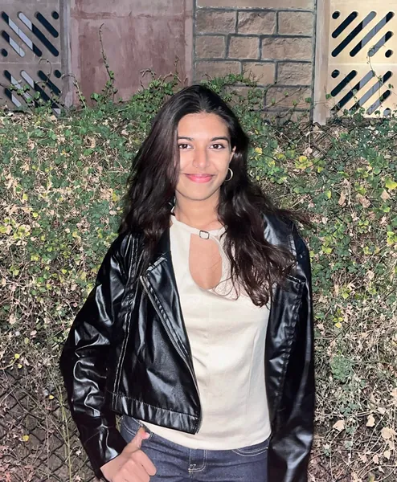

Info
Padmabala S
I am a third-year Fashion Design student who treats the environment as a living archive, where life experiences and artistic observations are translated into thoughtful silhouettes. I take an artistic approach to design, focusing on conceptual storytelling rather than a single style. I enjoy exploring diverse textiles and creative techniques to build unique, conceptually strong collections. I am artistically driven and eager for new experiences that will help me grow as a designer.

- Education
- Bachelor of Design (Fashion Design)
Specialisation: Heritage & Couture
National Institute of Fashion Technology, Jodhpur
2023–2027 - Achievements
- 1st position — Spectrum 2026, NIFT Jodhpur
- 1st runner-up — Antarang fashion show 2026, Ignus, IIT Jodhpur
- 1st runner-up — Antarang fashion show 2025, Ignus, IIT Jodhpur
- Craft Research Document on Kota Doria — July 2025
- Skills
- Fashion illustration
- Pattern making
- Draping
- Print design
- Garment construction
- Luxury couture
- Surface embellishments
- Trend forecasting research
- Fashion styling
- Time management
- Teamwork & collaboration
- Communication
- Presentation
- Software
- Adobe Photoshop · Adobe Illustrator · Adobe Lightroom · Procreate · CLO 3D
- Languages
- English · Malayalam · Hindi